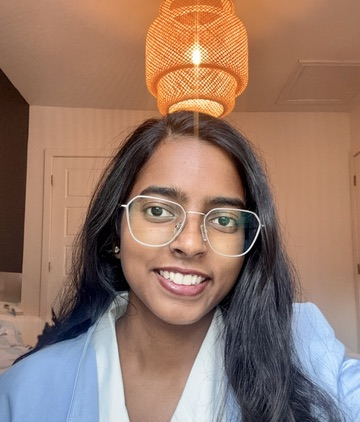

Google DeepMind APAC Research Symposium
Event-driven reinforcement learning for charge-efficient adaptive neuromodulation
PhD researcher at IIT Madras working on reinforcement learning and computational neuroscience, with a focus on adaptive brain stimulation and physiological regulation.

Event-driven reinforcement learning for charge-efficient adaptive neuromodulation
NutriRL: A Benchmark for Nutritional Regulation under Delayed State Transitions
Read the paper ↗NeuroAI: From Neurons to Transformers · Social
Soft Actor-Critic control of pulse timing and amplitude in a simulated Parkinsonian spiking neural network.
PPO-based control of stimulation parameters using neural state trajectories.
Offline Q-learning for L-DOPA dosing using patient data from PPMI.
LSTM and PPO for glucose regulation under delayed physiological feedback.
Cooperative gut–brain regulation with decentralized policies trained using MAPPO.
A reinforcement learning benchmark for regulating multiple nutrients when physiological effects arrive after a delay.
@article{khan2026nutrirl,
title = {NutriRL: A Benchmark for Nutritional Regulation under Delayed State Transitions},
author = {Khan, Aniket and Palika, Charitha and Chakravarthy, V. Srinivasa},
journal = {Reinforcement Learning Journal},
volume = {7},
year = {2026}
}Explores how distorted physiological state representations and altered reward learning can each disrupt feeding behavior.
@misc{palika2026faulty,
title = {Faulty States, Faulty Learning: Distinct Routes to Dysregulated Feeding in Homeostatic Reinforcement Learning},
author = {Palika, Charitha and Khan, Aniket and Maradana, Roshan and Chakravarthy, Srinivas},
howpublished = {SSRN preprint},
year = {2026},
url = {https://papers.ssrn.com/sol3/papers.cfm?abstract_id=7560808}
}Graph attention for agent coordination under partial observability. The course project outperformed a MADDPG baseline on Predator–Prey and Battlefield tasks.
CBAM attention in RealNVP coupling layers for high-dimensional density estimation.
Recurrent control of a two-link arm in MuJoCo, with fixed-point analysis of stability.
RGB-to-thermal reconstruction using Pix2Pix GAN, U-Net++, and MANet.


IIT Madras CGPA 9.48


IIT Madras CMC Vellore (Bioengineering) SCTIMST (Biomedical Technology Wing) CGPA 9.82

NIT Warangal CGPA 8.57